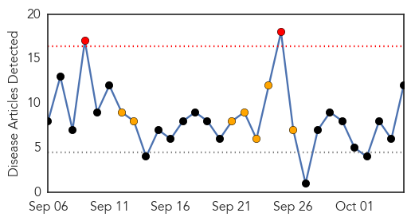
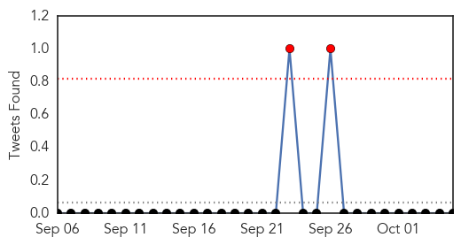
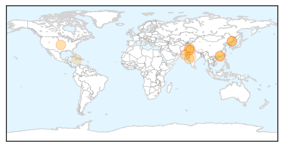
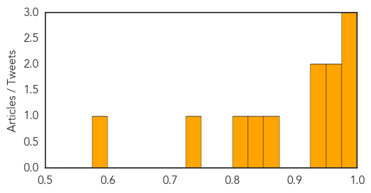

Toggle navigation
Early Warning
Daily Alerts
Dengue Fever
Oct 05, 2014
Compare to:
-
Hemmorhagic Fever
Mold/Fungal Infection
Influenza
Meningitis
Pertussis / Whooping Cough
Middle East Respiratory Syndrome
Cholera
Hepatitis
Chikungunya
Yellow Fever
Bubonic Plague
West Nile Virus
Swine Flu
Ebola
Measles
Unknown
Mumps
30 Day Trends
Web: 2
alerts
, 7
warnings
Twitter: 0
alerts
, 2
warnings
Top Articles:
0.997
5 dead in Guangdong dengue fever outbreak - Headlines, features, photo and videos from ecns.cn
0.987
South China province sees 1,279 new dengue fever cases - Headlines, features, photo and videos from ecns.cn
0.984
1,279 new dengue cases found in Chinese province
0.961
Health staff not allowed to go on holidays
0.960
Dengue fever cases rise ...｜Society｜WCT
0.945
Hong Kong warns of dengue fever risk
0.936
Dengue surveillance stressed on Eid
0.872
Sacrificing holidays
0.835
Surveillance to control dengue during Eid ordered
0.807
Another doc at JJ hospital down with dengue
0.730
Second dengue death in Indore
0.579
Upgraded Williamsfield Health Centre Opens
Top Tweets:
No tweets found for Oct 05, 2014
Web/News Articles

Tweets

Article Locations

Article Confidences
